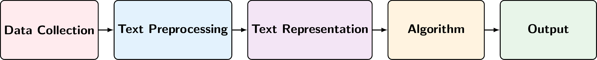
8 NLP Methods
Now that we have covered some of the basics of NLP, we can start looking at some of the most popular NLP methods. In this chapter, we will focus on Text Classification, Named Entity Recognition (NER), and Topic Modeling using Latent Dirichlet Allocation (LDA).
8.1 Steps in an NLP Project
A typical NLP project consists of several stages that transform raw text into meaningful insights. Figure 8.1 shows the main stages of an NLP project:
Data Collection: The starting point is unprocessed text data from various sources such as documents, social media posts, news articles, or customer reviews. This may involve handling different file formats, encodings, and may require conversion to a consistent format for further processing.
Text Preprocessing: This stage cleans and standardizes the text through operations like tokenization (splitting text into words or tokens), normalization (converting to lowercase, handling punctuation), removing stopwords, and lemmatization/stemming.
Text Representation (Feature Engineering): The preprocessed text is converted into numerical representations that machine learning algorithms can process. This can include sparse representations like Bag of Words (BoW) or TF-IDF, or dense representations like word embeddings (Word2Vec, GloVe) or contextual embeddings (BERT).
Algorithm: The numerical representations are fed into machine learning models or algorithms designed for specific NLP tasks such as text classification, named entity recognition (NER), sentiment analysis, or topic modeling.
Output: The final stage produces actionable insights such as predicted sentiment labels, identified entities in the text, discovered topics, or text classifications. These outputs can be used for decision-making, further analysis, or as part of larger applications.
In the following sections, we will discuss each of these stages in more detail and provide examples of how to implement them in Python using popular NLP libraries such as spaCy, Gensim, and scikit-learn.
8.2 Data Collection
Data collection is a general task in machine learning and is not specific to NLP. However, there are some specific challenges that arise when collecting text data:
Multiple File Formats: Text data can come in various formats such as plain text (
.txt), HTML, PDF, Word documents (.docx), PowerPoint presentations (.pptx), spreadsheets (.xlsx), images (requiring OCR), and structured formats like JSON or XML.Encoding Issues: Different text files may use different character encodings (e.g., UTF-8, Latin-1, ASCII), which can lead to corrupted characters if not handled properly.
Structured vs. Unstructured Data: Some sources contain structured metadata along with unstructured text (e.g., emails with headers, social media posts with timestamps and user information).
Web Scraping Challenges: When collecting data from websites, you need to handle HTML parsing, respect robots.txt files, manage rate limiting, and deal with dynamic content loaded via JavaScript.
Data Quality: Raw text often contains noise such as special characters, formatting artifacts, duplicate content, or incomplete documents that need to be addressed.
8.2.1 Converting Files to a Common Format
When working with multiple file types, it’s essential to convert them to a common text format for consistent processing. Handling this manually can be time-consuming, but there are libraries that can help automate this process. One such library is MarkItDown, which can convert various file formats (Office documents, PDFs, images, audio files, etc.) to Markdown or plain text. Depending on your needs there might be other libraries that are more suitable, but MarkItDown is a good general-purpose tool for this task.
MarkItDown supports conversion from:
- Office Documents: Word (
.docx), PowerPoint (.pptx), Excel (.xlsx) - PDFs: Extracts text from PDF files
- Images: Uses OCR to extract text from images (
.jpg,.png, etc.) - Audio: Transcribes audio files to text
- HTML: Converts HTML to clean Markdown
- Various other formats: CSV, JSON, XML, and more
Here’s an example of how to use MarkItDown to convert different file types to a common text format:
from markitdown import MarkItDown/opt/anaconda3/envs/ai-big-data-cemfi-dev/lib/python3.11/site-packages/pydub/utils.py:170: RuntimeWarning: Couldn't find ffmpeg or avconv - defaulting to ffmpeg, but may not work
warn("Couldn't find ffmpeg or avconv - defaulting to ffmpeg, but may not work", RuntimeWarning)# Initialize the converter
md = MarkItDown()
# Convert file to markdown
result = md.convert("../installation_notes.pdf")
# Access the text content
text_content = result.text_content
print(text_content[:200])| Artificial | Intelligence | | and | Big Data |
| ------------ | ------------ | ------------ | ------- | -------- |
| Postgraduate | Program | in Central | Banking | (CEMFI)This approach ensures that all your documents, regardless of their original format, are converted to a consistent text format that can be processed uniformly in subsequent NLP pipeline stages.
NoteNote on File Encoding
When reading and writing text files, specify the encoding (typically utf-8) to avoid encoding errors:
# Reading a file with explicit encoding
with open('file.txt', 'r', encoding='utf-8') as f:
text = f.read()
# Writing a file with explicit encoding
with open('output.txt', 'w', encoding='utf-8') as f:
f.write(text)In our applications, we will be using a dataset of ECB speeches that has been collected and prepared for further analysis. However, understanding these data collection challenges is important for real-world NLP projects where you may need to collect and prepare your own text data.
8.3 Text Preprocessing
Suppose we have collected a dataset of text documents, such as news articles, social media posts, policymaker speeches, or some other type of unstructured text data. Ultimately, we want to apply machine learning algorithms to this data to extract insights, make predictions, or discover patterns. However, most machine learning algorithms cannot work directly with raw text data. They require numerical input, and raw text is unstructured and noisy. Therefore, we need to preprocess the text to clean it and convert it into a format that can be used by machine learning models. Suppose in the following that the text data is already in a common format (e.g., plain text) and that roughly cleaned (e.g., no HTML tags, no encoding issues, etc.).
In this section we will look at
- Tokenization
- Normalization
- Stopword Removal
- Stemming and Lemmatization
But there are many other preprocessing steps that can be applied depending on the specific task and the characteristics of the text data. The choice of preprocessing steps should be guided by the specific NLP task you are working on and the nature of your text data.
8.3.1 Tokenization
Tokenization is the process of splitting text into individual units called tokens, which are typically words, punctuation marks, or other meaningful elements. It is one of the most fundamental steps in NLP preprocessing, as it breaks down unstructured text into discrete units that can be analyzed and processed.
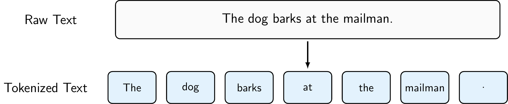
A very rudimentary form of tokenization would be to use string operations (e.g., str.split(' ')) to split text into tokens based on whitespace, but it is often better to use a library like spaCy that provides more advanced tokenization capabilities, such as handling punctuation, contractions, and special characters. As Figure 8.3 shows, spaCy’s tokenization can handle more complex cases than simple whitespace splitting, making it more robust for real-world text data.
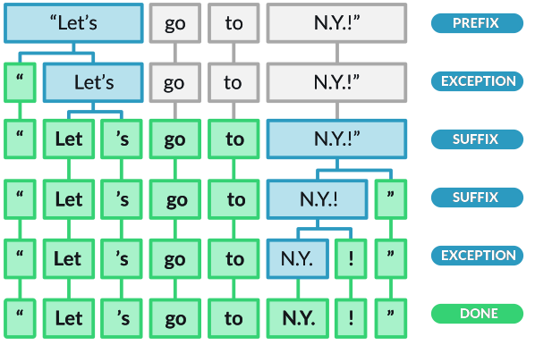
To perform tokenization using spaCy, you can do the following:
import spacy
# Load the spaCy English model
nlp = spacy.load("en_core_web_sm")
# Process the text using spaCy
doc = nlp("The dog barks at the mailman.")
# Print the tokens
for token in doc:
print(token.text)The
dog
barks
at
the
mailman
.Note that tokenization can also be performed at the character level (e.g., for languages without clear word boundaries), at the subword level (e.g., using Byte Pair Encoding or WordPiece tokenization for transformer models), or even at the sentence level (e.g., splitting text into sentences before further processing). The choice of tokenization method depends on the specific NLP task and the characteristics of the text data you are working with.
NoteN-grams: Capturing Word Sequences
While standard tokenization creates individual word tokens (called unigrams), we can extend this approach to capture sequences of consecutive words called n-grams. Common choices include:
- Bigrams (\(n=2\)): Two consecutive words (e.g., “The dog”, “dog barks”)
- Trigrams (\(n=3\)): Three consecutive words (e.g., “The dog barks”)
N-grams help partially capture word order and common phrases, which is useful when combined with representation methods like Bag of Words or TF-IDF. For example, bigrams can distinguish between “not good” and “very good”, whereas unigrams would treat both the same way. However, n-grams significantly increase vocabulary size (bigrams can have up to \(V^2\) combinations), so in practice only n-grams that actually appear in the corpus are kept.
8.3.2 Normalization
Normalization is the process of transforming text into a consistent, standardized format. This typically includes converting all text to lowercase, removing or standardizing punctuation, handling special characters, and eliminating extra whitespace. Normalization helps reduce the vocabulary size and ensures that different forms of the same word (e.g., “The” and “the”) are treated as identical, which improves the performance of downstream NLP tasks.
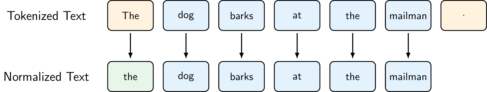
Common normalization operations include:
- Lowercasing: Converting all text to lowercase to treat “The”, “the”, and “THE” as the same token
- Punctuation Removal: Removing or standardizing punctuation marks, though this should be done carefully as punctuation can be meaningful in some contexts
- Special Character Handling: Removing or replacing special characters, emojis, or symbols
- Whitespace Normalization: Removing extra spaces, tabs, and newlines
However, normalization decisions should be made based on the specific task. For example, in sentiment analysis, exclamation marks might be important signals. In named entity recognition, capitalization helps identify proper nouns.
To perform normalization using Python and spaCy, you can do the following:
import spacy
# Load the spaCy English model
nlp = spacy.load("en_core_web_sm")
# Process the text using spaCy
doc = nlp("The dog barks at the mailman.")
# Original tokens
original_tokens = [token.text for token in doc]
# Normalize: lowercase and remove punctuation
normalized_tokens = [
token.text.lower() # Convert to lowercase
for token in doc
if not token.is_punct and # Remove punctuation
not token.is_space # Remove whitespace tokens
]
print("Original tokens:", original_tokens)Original tokens: ['The', 'dog', 'barks', 'at', 'the', 'mailman', '.']print("Normalized tokens:", normalized_tokens)Normalized tokens: ['the', 'dog', 'barks', 'at', 'the', 'mailman']SpaCy provides many built-in attributes (e.g., is_punct, like_num, is_space) that can be used to filter out unwanted tokens during normalization (see spaCy’s token attributes for more details).
8.3.3 Stopword Removal
Stopwords are common words that appear frequently in text but typically carry little meaningful information for many NLP tasks. These include words like “the”, “is”, “at”, “which”, and “on”. Removing stopwords can help reduce the dimensionality of the data, improve processing speed, and focus the analysis on more informative words that better capture the meaning and topics in the text.
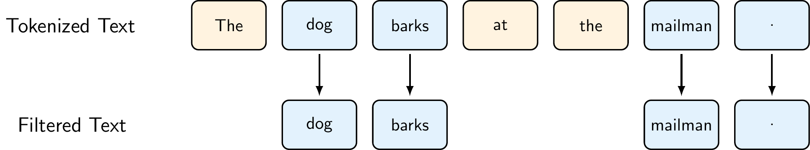
However, it’s important to note that stopword removal is not always beneficial. For some tasks like sentiment analysis, words like “not” or “no” are crucial for understanding meaning. Similarly, in tasks involving named entities, removing stopwords might eliminate important context. Modern approaches, especially those using word embeddings or transformer models, often keep stopwords because these models can learn to handle them appropriately.
To perform stopword removal using spaCy, you can do the following:
import spacy
# Load the spaCy English model
nlp = spacy.load("en_core_web_sm")
# Process the text using spaCy
doc = nlp("The dog barks at the mailman.")
# All tokens in the original text
all_tokens = [token.text for token in doc]
# Filter out stopwords
filtered_tokens = [token.text for token in doc if not token.is_stop]
print("Original tokens:", all_tokens)Original tokens: ['The', 'dog', 'barks', 'at', 'the', 'mailman', '.']print("Filtered tokens:", filtered_tokens)Filtered tokens: ['dog', 'barks', 'mailman', '.']8.3.4 Stemming and Lemmatization
Stemming and lemmatization are techniques for reducing words to their base or root form, helping to consolidate different variations of a word into a single representation. While both aim to reduce words to a common form, they differ significantly in their approach and output:
- Stemming is a crude heuristic process that chops off the ends of words using simple rules (e.g., removing “ing”, “ed”, “s”). It’s fast but can produce non-words (e.g., “studies” → “studi”).
- Lemmatization uses vocabulary and morphological analysis to return the base dictionary form (lemma) of a word (e.g., “better” → “good”, “running” → “run”). It’s more accurate but computationally more expensive.
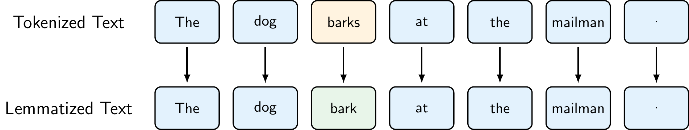
When to use each:
- Stemming is suitable when speed is important and approximate matching is acceptable (e.g., search engines, text classification with large datasets)
- Lemmatization is preferred when linguistic accuracy matters (e.g., information extraction, semantic analysis, question answering)
To perform lemmatization using spaCy, you can do the following:
import spacy
# Load the spaCy English model
nlp = spacy.load("en_core_web_sm")
# Process the text using spaCy
doc = nlp("The dog barks at the mailman.")
# Original tokens
original_tokens = [token.text for token in doc]
# Lemmatized tokens
lemmatized_tokens = [token.lemma_ for token in doc]
print("Original tokens:", original_tokens)Original tokens: ['The', 'dog', 'barks', 'at', 'the', 'mailman', '.']print("Lemmatized tokens:", lemmatized_tokens)Lemmatized tokens: ['the', 'dog', 'bark', 'at', 'the', 'mailman', '.']Since spaCy does not include a built-in stemmer, you would need to use a library like NLTK for stemming. However, for the purposes of this course, we will focus on lemmatization using spaCy.
8.3.5 Putting It All Together: Text Preprocessing Pipeline
Text preprocessing is a crucial step in any NLP pipeline, but it’s important to remember that not all steps are necessary for every task. The specific preprocessing steps you choose depend on your data, task, and model architecture. Here’s a summary of the main preprocessing techniques we’ve covered:
- Tokenization: Breaking text into individual tokens (words, punctuation, etc.)
- Essential first step for nearly all NLP tasks
- Can be performed at different levels: character, subword, word, or sentence level
- Normalization: Standardizing text format
- Lowercasing: Reduces vocabulary size, treats “The” and “the” as identical
- Punctuation handling: Remove or standardize based on task requirements
- Special character and whitespace handling
- Consider carefully: May lose important information for some tasks
- Stopword Removal: Filtering out common, low-information words
- Reduces dimensionality and focuses on content words
- Use with caution: Can hurt performance in tasks like sentiment analysis where words like “not” are crucial
- Stemming/Lemmatization: Reducing words to their base form
- Stemming: Fast but crude (e.g., “studies” → “studi”)
- Lemmatization: More accurate, returns dictionary form (e.g., “studies” → “study”)
The key is to understand your data and task requirements, and to experiment with different preprocessing configurations to find what works best for your specific use case. More modern approaches, based on transformers, often require only minimal preprocessing (e.g., just tokenization) since these models can learn to handle the raw text effectively. However, for traditional machine learning models or when working with smaller datasets, careful preprocessing can significantly improve performance.
NoteSpaCy in Other Languages
Throughout the course, we will be using the English model of spaCy (en_core_web_sm) for our examples. We can install it using the following line in Jupyter:
!python -m spacy download en_core_web_smSpaCy also provides models for many other languages, including Spanish (es_core_news_sm), French (fr_core_news_sm), German (de_core_news_sm), and more. You can download and use these models in the same way as the English model, just replacing the model name with the appropriate one for your language. For example, to download the Spanish model, you would run:
!python -m spacy download es_core_news_sm8.4 Text Representation
Suppose we have preprocessed our text data and now have a collection of clean, tokenized documents. The next step is to convert this text into a numerical format that machine learning algorithms can process. The challenge is to create representations that retain as much of the text’s meaning as possible while being computationally tractable. This process is known as text representation or feature engineering in NLP. There are several methods for representing text, which can be broadly categorized into:
- Sparse Representations: These methods create high-dimensional, sparse vectors where most values are zero (e.g., One-Hot Encoding, Bag of Words, TF-IDF).
- Static Dense Representations: These methods create dense, low-dimensional vectors that capture semantic relationships between words (e.g., Word2Vec, GloVe).
- Contextual Dense Representations: These methods create dense vectors that capture the meaning of words in context, allowing for different representations of the same word based on its usage (e.g., ELMo, BERT).
We will discuss each of these categories and their respective methods in more detail below.
8.4.1 Sparse Representations
Sparse representations are classical methods for converting text into numerical vectors. They are called “sparse” because most elements in the resulting vectors are zeros. While these methods are simple and interpretable, they have limitations: they create high-dimensional vectors, ignore word order, and don’t capture semantic relationships between words.
One-Hot Encoding
One-hot encoding represents each word in the vocabulary as a binary vector where only one element is 1 (corresponding to that word’s position) and all others are 0. If the vocabulary has \(V\) words, each word is represented by a \(V\)-dimensional vector.
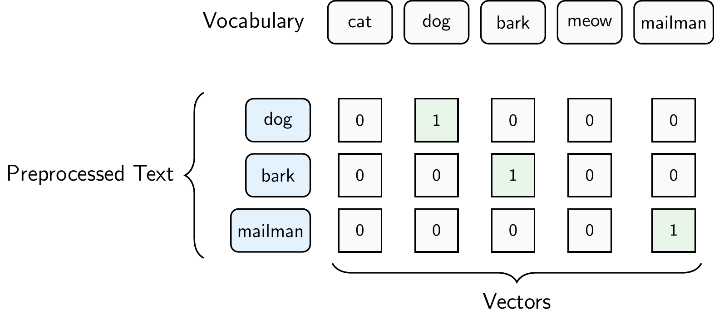
Figure 8.7 illustrates one-hot encoding for our example sentence “The dog barks at the mailman.” assuming that our vocabulary of 5 words contains “cat”, “dog”, “bark”, “meow”, and “mailman”. The additional words in the vocabulary might come from other documents in the corpus. Each word is represented as a vector of length 5, where the position of the 1 indicates which word it is. For example, the word “dog” is represented as [0, 1, 0, 0, 0] because “dog” is the second word in our vocabulary. The word “bark” is represented as [0, 0, 1, 0, 0] because “bark” is the third word in our vocabulary. The word “mailman” is represented as [0, 0, 0, 0, 1] because “mailman” is the fifth word in our vocabulary. The whole sentence is represented as a matrix of shape (number of words in the sentence, vocabulary size), where each row corresponds to a word and each column corresponds to a word in the vocabulary
\[S=\begin{bmatrix} 0 & 1 & 0 & 0 & 0 \\ 0 & 0 & 1 & 0 & 0 \\ 0 & 0 & 0 & 0 & 1 \\ \end{bmatrix}.\]
Bag of Words (BoW)
Bag of Words represents a document as a vector of word counts, ignoring word order but keeping multiplicity. Each dimension corresponds to a word in the vocabulary, and the value is the count of that word in the document.
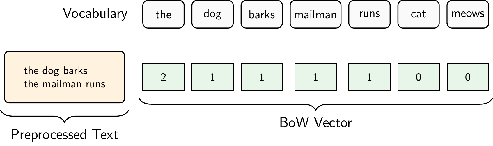
Figure 8.8 illustrates the Bag of Words representation for the document “The dog barks. The mailman runs.”. For simplicity, we did not remove stopwords in this example. Thus, the preprocessed text is simply “the dog barks the mailman runs”. The vocabulary consists of the words “the”, “dog”, “barks”, “mailman”, “runs”, “cat”, and “meows”, where “cat” and “meows” come from other documents in our corpus. In contrast to one-hot encoding, we get only one vector for the entire document and not one vector per word.
The Document-Term Matrix
When we apply the Bag of Words representation to an entire corpus, we get a Document-Term Matrix (DTM): a matrix where each row represents a document, each column represents a word in the vocabulary, and each cell contains the word count. For example, given three documents:
- Doc 1: “the dog barks the mailman runs”
- Doc 2: “the cat meows”
- Doc 3: “the dog runs”
the resulting DTM is:
\[\begin{array}{c|ccccccc} & \text{the} & \text{dog} & \text{barks} & \text{mailman} & \text{runs} & \text{cat} & \text{meows} \\ \hline \text{Doc 1} & 2 & 1 & 1 & 1 & 1 & 0 & 0 \\ \text{Doc 2} & 1 & 0 & 0 & 0 & 0 & 1 & 1 \\ \text{Doc 3} & 1 & 1 & 0 & 0 & 1 & 0 & 0 \\ \end{array}\]
In practice, the DTM is typically very sparse (most cells are zero) because each document uses only a small fraction of the total vocabulary. With real corpora, vocabularies can easily reach tens of thousands of words, resulting in very wide matrices where the vast majority of entries are zero.
The DTM is the standard input format for many NLP algorithms, including topic models like LDA and text classifiers. However, the DTM treats all words equally. A word like “the” that appears in nearly every document receives the same treatment as a rare, distinctive word like “inflation.” TF-IDF addresses this limitation.
To create the DTM in Python, we can use scikit-learn’s CountVectorizer, which tokenizes the documents, builds the vocabulary, and computes the word counts in one step:
from sklearn.feature_extraction.text import CountVectorizer
import pandas as pd
# Our corpus of three documents
documents = [
"the dog barks the mailman runs",
"the cat meows",
"the dog runs"
]
# Create the Document-Term Matrix
vectorizer = CountVectorizer()
dtm = vectorizer.fit_transform(documents)
# Display as a DataFrame for readability
pd.DataFrame(
dtm.toarray(),
columns=vectorizer.get_feature_names_out(),
index=["Doc 1", "Doc 2", "Doc 3"]
) barks cat dog mailman meows runs the
Doc 1 1 0 1 1 0 1 2
Doc 2 0 1 0 0 1 0 1
Doc 3 0 0 1 0 0 1 1Term Frequency-Inverse Document Frequency (TF-IDF)
TF-IDF weights word counts by how rare or common they are across the entire corpus. It increases the weight of distinctive words and decreases the weight of common words like “the” or “is”.
\[\text{TF-IDF}(t, d) = \text{TF}(t, d) \times \text{IDF}(t)\]
where:
- \(\text{TF}(t, d)\) = frequency of term \(t\) in document \(d\)
- \(\text{IDF}(t) = \log\frac{N}{\text{df}(t)}\) where \(N\) is the total number of documents and \(\text{df}(t)\) is the number of documents containing term \(t\)
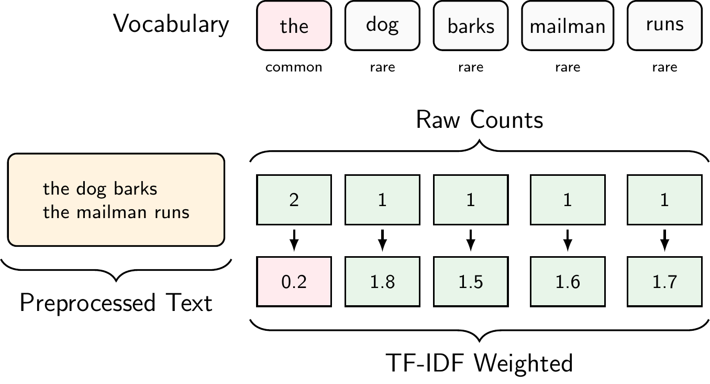
To compute TF-IDF in Python, we can use scikit-learn’s TfidfVectorizer, which works just like CountVectorizer but applies the TF-IDF weighting:
from sklearn.feature_extraction.text import TfidfVectorizer
import pandas as pd
# Same corpus as before
documents = [
"the dog barks the mailman runs",
"the cat meow",
"the dog runs"
]
# Create the TF-IDF matrix
tfidf_vectorizer = TfidfVectorizer()
tfidf_matrix = tfidf_vectorizer.fit_transform(documents)
# Display as a DataFrame
pd.DataFrame(
tfidf_matrix.toarray(),
columns=tfidf_vectorizer.get_feature_names_out(),
index=["Doc 1", "Doc 2", "Doc 3"]
) barks cat dog mailman meow runs the
Doc 1 0.468699 0.000000 0.356457 0.468699 0.000000 0.356457 0.553642
Doc 2 0.000000 0.652491 0.000000 0.000000 0.652491 0.000000 0.385372
Doc 3 0.000000 0.000000 0.619805 0.000000 0.000000 0.619805 0.481334Notice how “the”, which appears in all three documents, receives a lower weight than distinctive words like “barks” or “mailman” that appear in only one document.
NoteScikit-learn’s TF-IDF Variant
The formula above is the standard textbook definition of TF-IDF. However, scikit-learn’s TfidfVectorizer uses a smoothed variant by default:
\[\text{IDF}_{\text{sklearn}}(t) = \log\frac{1 + N}{1 + \text{df}(t)} + 1\]
The “+1” terms in the fraction prevent division by zero, and the “+1” added at the end ensures that even terms appearing in every document still receive a small positive weight rather than being zeroed out entirely. In our example, “the” appears in all 3 documents, so the standard formula gives \(\text{IDF} = \log(3/3) = 0\), while scikit-learn’s smoothed formula gives \(\log(4/4) + 1 = 1\).
By default, scikit-learn also applies L2 normalization to each document vector (controlled by the norm parameter), which scales the values further. These are implementation details but the core idea remains the same: common words get lower weights, rare words get higher weights.
Comparing Sparse Representations
The three sparse representation methods we’ve discussed form a progression of increasing sophistication:
One-Hot Encoding is the most basic approach, representing each word as an independent unit with no relationship to other words. It creates a separate vector for each word token, making it memory-intensive and treating “cat” as equally different from “dog” as it is from “runs”.
Bag of Words aggregates word occurrences into document-level vectors, making it more practical for document classification and comparison. By counting word frequencies rather than treating each occurrence separately, BoW reduces the representation to a single vector per document. However, it still treats common words like “the” with the same importance as distinctive terms like “quantum”, which can obscure the meaningful content of documents.
TF-IDF addresses this issue by weighting words based on their distinctiveness across the corpus. Common words that appear in many documents receive lower weights, while rare, potentially informative words receive higher weights. This makes TF-IDF particularly effective for tasks like document classification, information retrieval, and topic analysis, where distinguishing between documents based on their unique vocabulary is important.
Despite these improvements, all sparse representations suffer from critical limitations:
- High dimensionality: With vocabulary sizes often exceeding 10,000 words, these vectors are high-dimensional with most values being zero
- No semantic understanding: Each word is an isolated symbol. For example, “excellent” and “great” are treated as completely unrelated despite their similar meanings, and there’s no notion that “king” and “queen” share semantic properties
- Fixed vocabulary: Any word not encountered during training cannot be represented (the out-of-vocabulary problem)
- Loss of word order: BoW and TF-IDF discard sequential information entirely, treating “dog bites man” and “man bites dog” as identical
8.4.2 Dense Representations
Dense representations, also known as embeddings, were developed to overcome some of the limitations of sparse methods. Instead of representing words as high-dimensional sparse vectors, dense methods represent words as low-dimensional dense vectors.
These dense vectors are learned from data and capture semantic relationships between words. The idea is that words that appear in similar contexts will have similar vector representations, allowing us to capture the meaning of words based on their usage. This is often summarized by the famous quote from linguist J. R. Firth:
“A word is characterized by the company it keeps”
Figure 8.10 illustrates how words with similar meanings cluster together in embedding space. For example, “dog”, “cat”, “bird”, and “fish” might cluster together in one region of the space (representing animals), while “car”, “plane”, “boat”, and “train” cluster together in another region (representing vehicles).
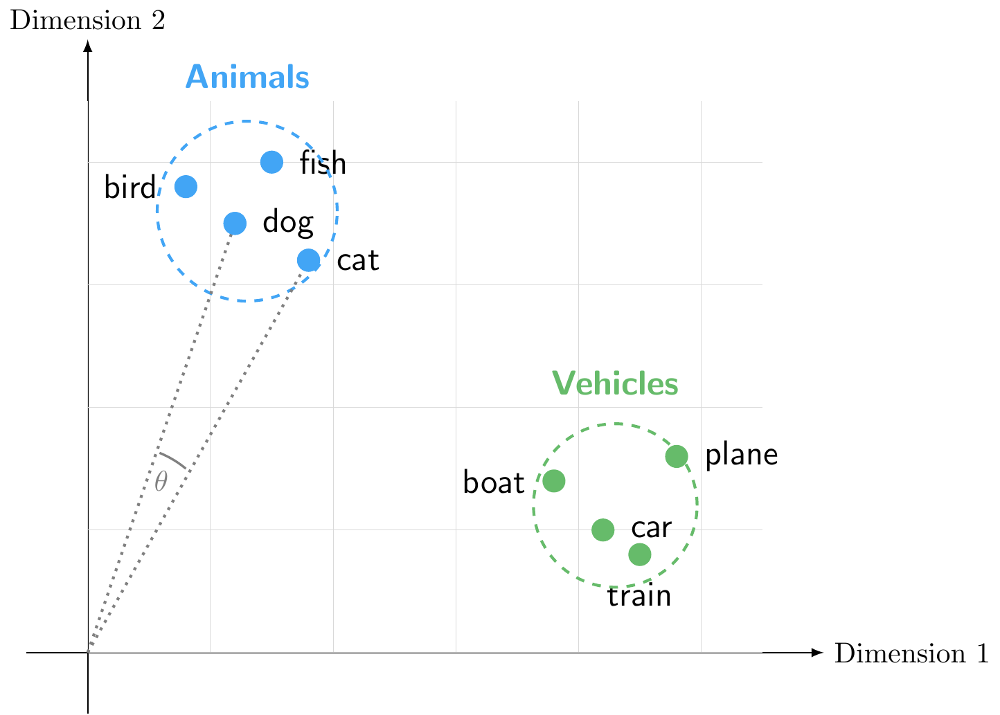
We can measure the similarity between words by calculating the cosine similarity between their vectors, which ranges from -1 to 1 with zero indicating orthogonality (no similarity). For example, the cosine similarity between “dog” and “cat” would be high, indicating that they are semantically similar, while the cosine similarity between “dog” and “car” would be low, indicating that they are semantically different.
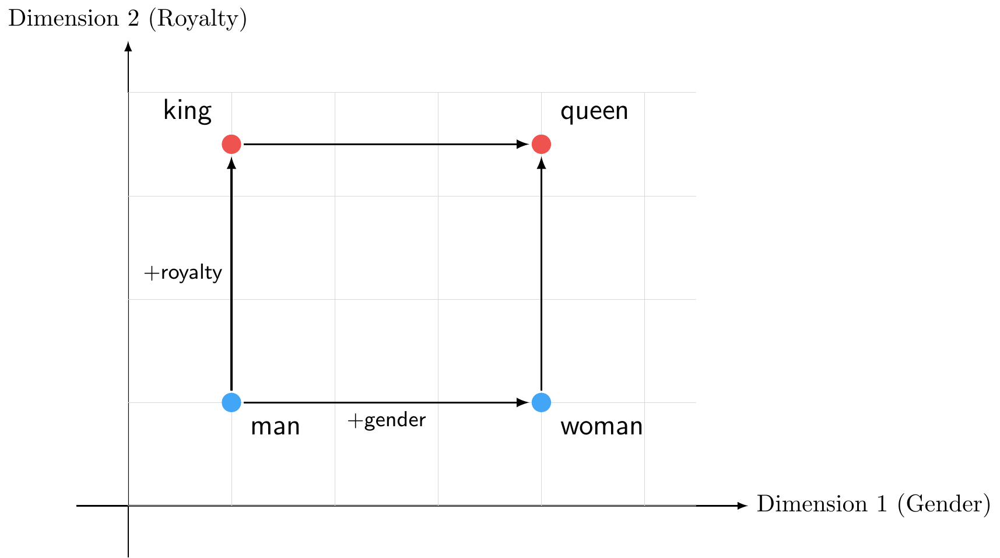
Figure 8.11 demonstrates a more sophisticated property of word embeddings: not only do similar words cluster together (as we saw with animals and vehicles), but relationships between words are preserved across the space through vector arithmetic:
\[\vec{king} - \vec{man} + \vec{woman} \approx \vec{queen}\]
Common algorithms for learning word embeddings include Word2Vec and GloVe. These algorithms use large text corpora to learn word vectors that capture semantic relationships based on the contexts in which words appear. For example, Word2Vec uses a neural network to predict a target word based on its surrounding context words (the skip-gram model) or to predict context words based on a target word (the CBOW model). We will not go into the technical details of these algorithms here, but the key takeaway is that they learn to position words in a continuous vector space where semantic relationships are preserved.
If we want to represent sentences or documents, we can combine word embeddings by averaging the vectors of the words in the sentence or document. However, this approach still ignores word order and context, and it may not capture the full meaning of the text.
SpaCy’s medium and large models come with pre-trained word vectors built in. We can use them to look up word embeddings and compute similarities between words:
import spacy
# Load a model with word vectors (medium or large)
nlp = spacy.load("en_core_web_lg")
# Get word vectors
dog = nlp("dog")
cat = nlp("cat")
car = nlp("car")
# Compute cosine similarity between words
print(f"dog <-> cat: {dog.similarity(cat):.3f}")dog <-> cat: 0.802print(f"dog <-> car: {dog.similarity(car):.3f}")dog <-> car: 0.356print(f"cat <-> car: {cat.similarity(car):.3f}")cat <-> car: 0.319As expected, “dog” and “cat” (both animals) are much more similar to each other than either is to “car” (a vehicle). Each word vector is a dense array of 300 dimensions:
# Word vector for "dog" (showing first 10 of 300 dimensions)
print(f"Shape: {dog.vector.shape}")Shape: (300,)print(f"First 10 values: {dog.vector[:10].round(3)}")First 10 values: [-0.402 0.371 0.021 -0.341 0.05 0.294 -0.174 -0.28 0.068 2.169]Note that if you compare a whole sentence or a document, you will get a single vector that represents the average of the word vectors in that text. This can be useful for tasks like document classification or clustering, but it still has limitations in terms of capturing the full meaning of the text.
Both Word2Vec and GloVe produce static embeddings meaning that each word gets exactly one vector regardless of context. Therefore, the word “bank” would have the same vector whether it appears in the context of “river bank” or “financial bank”. This can lead to ambiguity and loss of meaning in cases where words have multiple senses.
To address this issue, researchers developed contextual embeddings that generate different vectors for the same word based on its context. These models use deep learning architectures, such as recurrent neural networks (RNNs) or transformers, to capture the context in which words appear. Examples of contextual embedding models include ELMo and BERT. These models have significantly advanced the state of the art in NLP by providing richer representations that can capture nuances of meaning based on context, leading to improved performance on a wide range of NLP tasks. We will have a look at brief look at transformer-based models like BERT in the section on Large Language Models (LLMs) and Generative AI.
8.5 Text Classification
Text classification is the task of assigning predefined categories or labels to text documents. Common applications include spam detection (spam vs. not spam), topic categorization (sports, politics, technology), and sentiment analysis (positive, negative, neutral). In essence, text classification is a supervised learning problem where we have labeled training data (documents with known categories) and want to predict categories for new, unseen documents.
The key insight is that text classification bridges the preprocessing and representation methods we’ve discussed with the supervised learning algorithms you’ve already learned (logistic regression, decision trees, neural networks, etc.). The text representations, whether sparse (BoW, TF-IDF) or dense (embeddings), become the feature vectors \(x\) that we feed into these algorithms, and the categories become the target labels \(y\).
8.5.1 Sentiment Analysis
Sentiment analysis is a specific type of text classification that aims to determine the emotional tone or opinion expressed in a piece of text. It’s widely used in business to analyze customer reviews, social media monitoring, brand perception, and market research. We’ll focus on sentiment analysis as our primary example of text classification, though the same principles apply to other classification tasks.
There are two main approaches to sentiment analysis:
- Rule-Based Approach: Uses predefined rules and dictionaries of words labeled with sentiment scores (e.g., “excellent” = +3, “terrible” = -3). To classify: tokenize text, look up each word in the lexicon, aggregate scores, and classify based on the total (positive if score > 0).
- Advantages: Simple, interpretable, no training data required
- Limitations: Cannot adapt to domain-specific language, misses context (e.g., “not good”), cannot handle sarcasm
- Machine Learning-Based Approach: Treats sentiment analysis as a supervised learning problem using labeled training data. Workflow: (1) preprocess text, (2) convert to numerical vectors (BoW, TF-IDF, or embeddings), (3) train classifier (logistic regression, decision trees, neural networks, etc.), (4) predict on new documents.
- Advantages: Adapts to domain-specific language, learns complex patterns, handles negation and context better
- Limitations: Requires labeled training data, less interpretable
8.5.2 Connection to Supervised Learning
Text classification demonstrates how NLP preprocessing and representation methods integrate seamlessly with the supervised learning framework:
- Features (\(x\)): Text representations (BoW, TF-IDF, embeddings) become the input features
- Labels (\(y\)): Document categories (sentiment, topic, spam/not spam)
- Models: Same algorithms you’ve learned (logistic regression, decision trees, neural networks, etc.)
- Evaluation: Same metrics (accuracy, precision, recall, confusion matrix, etc.)
8.6 Topic Modeling
Topic modeling is the task of discovering abstract “topics” that occur in a collection of documents. Unlike text classification, where we assign documents to predefined categories using labeled training data, topic modeling automatically discovers the underlying thematic structure in a corpus without any prior labels. This makes it an unsupervised learning technique, meaning we don’t need to tell the algorithm what themes to look for; it finds them on its own.
The key insight is that topic modeling complements text classification: while classification answers “which of these known categories does this document belong to?”, topic modeling answers “what themes exist in this collection that I haven’t defined yet?” This makes it particularly useful for exploring large document collections, such as central bank communications, scientific papers, or news archives, where you want to understand what subjects are discussed and how they relate to each other.
8.6.1 Latent Dirichlet Allocation (LDA)
Latent Dirichlet Allocation (LDA) is the most widely used algorithm for topic modeling. In LDA, a topic is represented as a probability distribution over words. For example, an “Economics” topic might assign high probabilities to words like “economy”, “growth”, “inflation”, and “policy”, while a “Politics” topic might emphasize “government”, “election”, “parliament”, and “vote”. Documents are then modeled as mixtures of topics. For example, a newspaper article about economic policy might be 60% Economics and 40% Politics.
LDA is built on the idea of a generative model: it assumes that each document in the corpus was “written” by the following process (illustrated in Figure 8.12):
- Each topic is a distribution over words: certain words are more likely under certain topics
- Each document is a mixture of topics: a document might be 60% about economics and 40% about politics
- Each word in a document is generated by first picking a topic (according to the document’s mixture), then picking a word from that topic’s distribution
Of course, documents aren’t actually written this way. But by assuming this generative process, LDA can work backwards: it finds the parameters of the generative model (the topic distributions and document mixtures) that make the observed words most likely to have been generated by this process.1
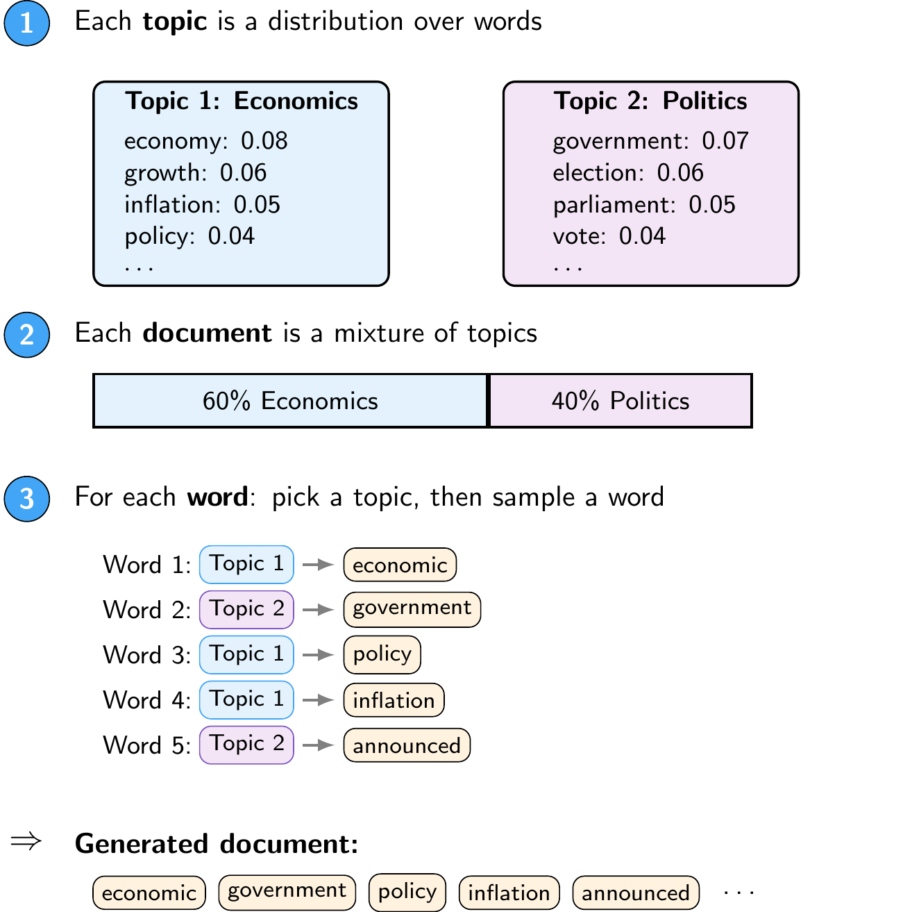
An important property of LDA is soft assignment: each document can belong to multiple topics with different weights, rather than being assigned to a single category. This reflects the reality that most documents cover several themes at once. The resulting topics are also interpretable: you can examine the highest-probability words for each topic to understand what theme it represents.
8.6.2 Connection to Unsupervised Learning
Just as text classification connects NLP representations to the supervised learning framework, topic modeling connects them to unsupervised learning:
- Input: A Document-Term Matrix
- No labels (\(y\)): The algorithm discovers structure without predefined categories
- Output: Two sets of distributions, namely topic compositions per document and word distributions per topic
- Evaluation: Unlike classification, there is no ground truth to compare against, so topic quality is assessed both quantitatively (coherence scores, see below) and qualitatively (human interpretation of the top words per topic)
NotePractical Considerations
Since topic modeling is unsupervised, there are no ground-truth labels to evaluate against. The most common quantitative metric is the coherence score, which measures how semantically related the top words within each topic are. A topic with top words {“economy”, “growth”, “inflation”, “policy”} is coherent because these words naturally co-occur, while {“economy”, “dog”, “tuesday”, “blue”} is not. Since LDA requires the number of topics \(K\) to be specified in advance, a common approach is to train models with different values of \(K\) and select the one with the highest coherence, validated by manually inspecting the resulting topics.
Results also depend heavily on preprocessing choices. Stopword removal is particularly important since common words like “the” would otherwise dominate every topic. Setting a minimum document frequency (to exclude very rare words) and a maximum document frequency (to exclude words that appear in nearly every document) also helps produce cleaner topics.
NoteAdvanced Topic: Deep Learning Architectures for NLP
Deep learning has revolutionized NLP through specialized neural network architectures designed to handle sequential text data. For example, Recurrent Neural Networks (RNNs) process sequences word-by-word, maintaining a hidden state that captures information from previous words. More recently, Transformers have become the dominant architecture for NLP tasks due to their ability to capture long-range dependencies and contextual relationships without relying on sequential processing.
These architectures are mostly beyond the scope of this course. However, we will explore transformer-based models and their applications in the Generative AI part of the course.
8.7 Python Implementation: Topic Modeling
First, we need to load the necessary libraries
import pandas as pd # Used for data manipulation
import numpy as np # Used for numerical operations
import matplotlib.pyplot as plt # Used for plotting
import spacy # Used for text preprocessing and NLP tasks
from spacy import displacy # Used for visualizing NER results
from wordcloud import WordCloud # Used for creating word clouds
from gensim.corpora.dictionary import Dictionary # Used for creating a dictionary of tokens and their corresponding ids
from gensim.models.ldamodel import LdaModel # Used for training a Latent Dirichlet Allocation (LDA) topic model
from gensim.models import CoherenceModel # Used for evaluating the coherence of the topics generated by the LDA model
import pyLDAvis.gensim_models # Used for visualizing LDA topic modelsWe also need to download the spaCy English model for NER. This only needs to be done once
#!python -m spacy download en_core_web_smThen, we download a dataset of central bank speeches. We are using the dataset from cbspeeches.com (Campiglio et al. 2025), which contains a collection of speeches by central bankers from around the world.
import urllib.request
import os.path
# Create the data folder if it doesn't exist
os.makedirs("data", exist_ok=True)
# Check if the file exists
if not os.path.isfile("data/CBS_dataset_v1.0.dta"):
print("Downloading dataset...")
# Define the dataset to be downloaded
fileurl = "https://www.dropbox.com/scl/fi/la5hpz39yht8mmoz0n98t/CBS_dataset_v1.0.dta?rlkey=jo0u8ktm1ixkwic4jw03re9c6&dl=1"
# Define the filename to save the dataset
filename = "data/CBS_dataset_v1.0.dta"
# Download the dataset in the data folder
urllib.request.urlretrieve(fileurl, filename)
print("DONE!")
else:
print("Dataset already downloaded!")Dataset already downloaded!Then, we load the dataset into a pandas DataFrame
speeches = pd.read_stata("data/CBS_dataset_v1.0.dta")
speeches = speeches.set_index("index")8.7.1 Data Exploration
Let’s take a look at the dataset structure
speeches.info()<class 'pandas.core.frame.DataFrame'>
Index: 35487 entries, 0 to 35486
Data columns (total 15 columns):
# Column Non-Null Count Dtype
--- ------ -------------- -----
0 URL 35487 non-null object
1 PDF 35487 non-null object
2 Title 35487 non-null object
3 Subtitle 35487 non-null object
4 Date 35487 non-null object
5 Authorname 35487 non-null object
6 Role 35487 non-null object
7 Gender 35487 non-null object
8 CentralBank 35487 non-null object
9 Country 35487 non-null object
10 text 35487 non-null object
11 text_original 35487 non-null object
12 Filename 35487 non-null object
13 Language 35487 non-null object
14 Source 35487 non-null object
dtypes: object(15)
memory usage: 4.2+ MBWe can see that we have a DataFrame with several columns, including the speech text, date, speaker, and title. Before we continue, let’s convert the Date column to a datetime format for easier manipulation later on
speeches["Date"] = pd.to_datetime(speeches["Date"])Now, let’s preview the dataset
speeches.head() URL PDF ... Language Source
index ...
0 https://www.cbaruba.org/readBlob.do?id=10756 ... English CB websites
1 https://www.cbaruba.org/readBlob.do?id=7515 ... English CB websites
2 https://www.cbaruba.org/readBlob.do?id=7518 ... English CB websites
3 https://www.cbaruba.org/readBlob.do?id=7548 ... Dutch CB websites
4 https://www.cbaruba.org/readBlob.do?id=7554 ... English CB websites
[5 rows x 15 columns]Let’s look at the first speech in detail
idx = 0 # index of the speech to display
max_len = 200 # maximum length of text to display
for column in ["Title", "Authorname", "CentralBank", "Date", "text", "URL"]:
# Get the data and truncate if it is too long
data = speeches.iloc[idx][column]
data = (data[:max_len] + "...") if isinstance(data, str) and len(data) > max_len else data
# Print the column name and data
print(f"{column}: {data}\n")Title: President speech Managing the Economy as if the Future Really Matters Business Day at the CBA
Authorname: Jeanette R Semeleer
CentralBank: Central Bank of Aruba
Date: 2021-12-08 00:00:00
text: Managing the Economy as if the Future Really Matters Speech by the President of the Centrale Bank van Aruba Business Day at the CBA December 8 & 9, 2021 Slide it 3 Ladies and gentlemen, To say that 20...
URL: https://www.cbaruba.org/readBlob.do?id=10756Let’s check which central banks are most represented in the dataset
speeches["CentralBank"].value_counts().head(10).plot(kind="bar")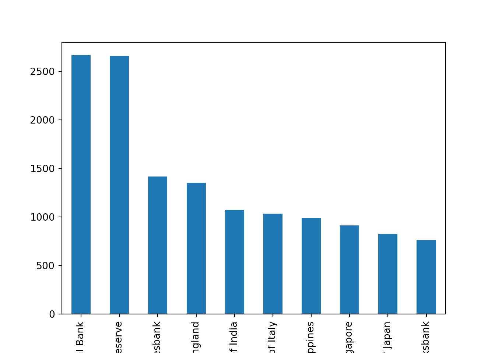
There are more than 2500 speeches for both the ECB and the Fed. We can also check the distribution of speeches over time
speeches["Date"].dt.year.value_counts().sort_index().plot(kind="bar")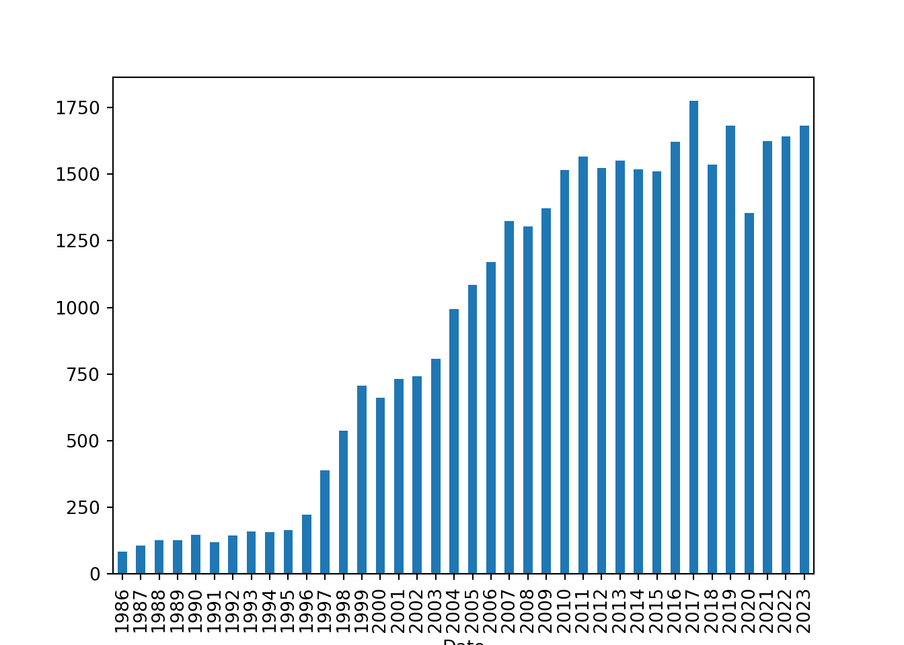
Let’s quickly recap what this last line did
We accessed the
Datecolumn of thespeechesDataFrame, which contains the dates of the speeches.We used the
dt.yearaccessor to extract the year from each date in theDatecolumn.We then called
value_counts()to count the number of speeches for each year.We used
sort_index()to sort the counts by year in chronological order.Finally, we called
plot(kind='bar')to create a bar chart of the number of speeches per year.
Let’s take a look at the distribution of speeches by central bank and year
fig = plt.figure(figsize=(8, 4))
plt.plot(speeches.query("CentralBank == 'European Central Bank'")["Date"].dt.year.value_counts().sort_index(), label="ECB")
plt.plot(speeches.query("CentralBank == 'Board of Governors of the Federal Reserve'")["Date"].dt.year.value_counts().sort_index(), label="Fed")
plt.plot(speeches.query("CentralBank == 'Bank of England'")["Date"].dt.year.value_counts().sort_index(), label="BoE")
plt.plot(speeches.query("CentralBank == 'Swiss National Bank'")["Date"].dt.year.value_counts().sort_index(), label="SNB")
plt.xlabel("Year")
plt.ylabel("Number of Speeches")
plt.title("Number of Speeches by Year and Central Bank")
plt.legend()
plt.show()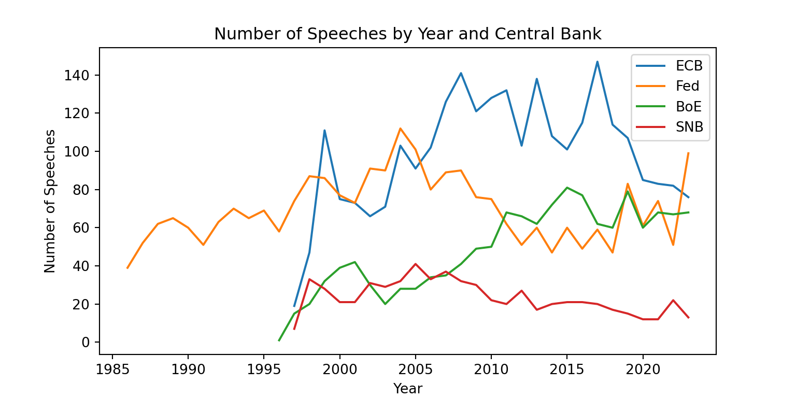
Here we used a different approach to plot the number of speeches by year and central bank. We created a figure with a specific size, then plotted the number of speeches for each central bank separately using plt.plot(). We also added labels for the axes, a title, and a legend to differentiate between the central banks. Finally, we displayed the plot using plt.show().
Let’s try to get a sense of the content of the speeches. We will focus on the ECB speeches for this part. We can create a word cloud to visualize the most common words in the ECB speeches. We first concatenate all the speech texts into a single string
We first filter the dataset to only include ECB speeches
ecb_speeches = speeches.query("CentralBank == 'European Central Bank'").copy()
ecb_speeches.head() URL ... Source
index ...
2976 https://www.ecb.europa.eu/press/key/date/2000/... ... CB websites
2977 https://www.ecb.europa.eu/press/key/date/2000/... ... CB websites
2978 https://www.ecb.europa.eu/press/key/date/2000/... ... BIS
2979 https://www.ecb.europa.eu/press/key/date/2000/... ... BIS
2980 https://www.ecb.europa.eu/press/key/date/2000/... ... CB websites
[5 rows x 15 columns]Then, we can create a word cloud to visualize the most common words in the ECB speeches. We first concatenate all the speech texts into a single string
text = " ".join(ecb_speeches["text"])wordcloud = WordCloud(width=800, height=400, background_color="white").generate(text)
plt.imshow(wordcloud, interpolation='bilinear')
plt.axis("off")(-0.5, 799.5, 399.5, -0.5)plt.show()There are some common words that show up in many speeches such as “ECB”, and “central bank”. Let’s exclude them by expanding the list of stopwords
w = WordCloud()
stopwords = list(w.stopwords)
custom_stopwords = ["ECB", "central bank", "central", "bank", "european", "monetary policy", "monetary", "policy", "will", "euro", "area"]
stopwords = set(stopwords + custom_stopwords)The word cloud now looks a bit different, with more specific terms. This gives us a better sense of the topics that are being discussed in the ECB speeches.
wordcloud = WordCloud(width=800, height=400, background_color="white", stopwords=stopwords).generate(text)
plt.imshow(wordcloud, interpolation="bilinear")
plt.axis("off")(-0.5, 799.5, 399.5, -0.5)plt.show()Let’s see how this changed over time. We can create separate word clouds for different time periods
for year in [2009, 2020, 2022]:
text = " ".join(ecb_speeches.query("Date.dt.year == @year")["text"])
wordcloud = WordCloud(width=800, height=400, background_color="white", stopwords=stopwords).generate(text)
plt.imshow(wordcloud, interpolation="bilinear")
plt.axis("off")
plt.title(f"ECB Speeches in {year}")
plt.show()These word clouds give us a sense of how the focus of the ECB speeches has evolved over time. For example, we can see that in 2009, during the global financial crisis, there was a lot of discussion about “crisis”, “banks”, and “risk”. In contrast, in 2020, there is more discussion about “risk”, “banks”, and “pandemic”. And in 2022, “inflation” has become a more prominent topic.
8.7.2 Text Preprocessing
Now that we have a better understanding of the dataset, we can start preprocessing the text data. This typically involves several steps, such as tokenization, stopword removal, and stemming or lemmatization. We will use the spaCy library for these tasks.
# Load the spaCy English model
nlp = spacy.load("en_core_web_sm")Let’s take a look at how to preprocess a single speech. We will start with tokenization, which is the process of breaking down the text into individual words or tokens.
# Get the text of the first speech
text = ecb_speeches.iloc[0]["text"]
# Process the text using spaCy
doc = nlp(text)
# Extract the tokens
tokens = [token.text for token in doc]
# Print the speech text and the first 10 tokens
print(f"{text[:80]}...") # Print the first 80 characters of the speechOne year with the euro Speech delivered by Dr Sirkka Hamalainen, Member of the E...# Print the first 10 tokens
print(tokens[0:14])['One', 'year', 'with', 'the', 'euro', 'Speech', 'delivered', 'by', 'Dr', 'Sirkka', 'Hamalainen', ',', 'Member', 'of']Spacy does a lot more than just tokenization. It also performs part-of-speech tagging, named entity recognition, and more. We can access all of this information through the doc object. For example, we can extract the lemmas of the tokens, which are the base forms of the words
lemmas = [token.lemma_ for token in doc]
print(lemmas[0:14])['one', 'year', 'with', 'the', 'euro', 'Speech', 'deliver', 'by', 'Dr', 'Sirkka', 'Hamalainen', ',', 'Member', 'of']We will also see how to use spaCy for named entity recognition (NER) and dependency parsing later on. For now, let’s focus on the basic text preprocessing steps of tokenization, stopword removal, and lemmatization.
Let’s write a function to preprocess the text of all the speeches in the dataset. This function will perform tokenization, stopword removal, and lemmatization
custom_stopwords = [] # You can add any additional stopwords that you want to exclude from the analysis
def preprocess_texts(texts):
# Replace European Central Bank with ECB to avoid it being split into multiple tokens
texts_np = np.char.replace(texts.values.astype(str), "European Central Bank", "ECB")
# Convert the numpy array of texts to a list of strings
text_list = texts_np.tolist()
# Process each text using spaCy
docs = nlp.pipe(text_list, disable=["tok2vec", "parser", "ner"]) # We disable the components that we don't need to speed up the processing
tokens_list = []
for doc in docs:
# Extract the lemmas of the tokens, lowercase them and exclude stopwords, punctuation, numbers, and custom stopwords
lemmas = [token.lemma_.lower() for token in doc
if not token.is_stop and
not token.is_punct and
not token.like_num and
token.text not in custom_stopwords
]
tokens_list.append(lemmas)
return pd.Series(tokens_list, index=texts.index)We could do more preprocessing steps, but we will keep it simple for now. We can always come back and add more steps later if needed. Let’s try our function on a single speech to see how it works.
We need to define a wrapper function to preprocess a single text, since our preprocess_texts function is designed to work with a Series of texts
def preprocess_text(text):
return preprocess_texts(pd.Series([text]))[0]Then, we can apply this function to the first speech in the dataset
preprocessed_tokens = preprocess_text(ecb_speeches.iloc[0]["text"])
for i in range(14):
print(f"{preprocessed_tokens[i]}")year
euro
speech
delivered
dr
sirkka
hamalainen
member
executive
board
ecb
europaisches
wochenende
berlinLet’s compare the preprocessed tokens with the original text to see how the function has transformed the text
print("Original tokens:")Original tokens:print(tokens[0:14])['One', 'year', 'with', 'the', 'euro', 'Speech', 'delivered', 'by', 'Dr', 'Sirkka', 'Hamalainen', ',', 'Member', 'of']print("\nPreprocessed tokens:")
Preprocessed tokens:print(preprocessed_tokens[0:14])['year', 'euro', 'speech', 'delivered', 'dr', 'sirkka', 'hamalainen', 'member', 'executive', 'board', 'ecb', 'europaisches', 'wochenende', 'berlin']print(f"\nNumber of original tokens: {len(tokens)}")
Number of original tokens: 3132print(f"Number of preprocessed tokens: {len(preprocessed_tokens)}")Number of preprocessed tokens: 1388print(f"Number of unique original tokens: {len(set(tokens))}")Number of unique original tokens: 857print(f"Number of unique preprocessed tokens: {len(set(preprocessed_tokens))}")Number of unique preprocessed tokens: 653Let’s apply this preprocessing function to all the speeches in the dataset. We will create a new column in the DataFrame to store the preprocessed tokens
ecb_speeches["preprocessed_tokens"] = preprocess_texts(ecb_speeches["text"])Then, we can take a look at the preprocessed tokens
ecb_speeches["preprocessed_tokens"]index
2976 [year, euro, speech, delivered, dr, sirkka, ha...
2977 [opening, remarks, hearing, committee, economi...
2978 [international, impact, euro, speech, delivere...
2979 [role, central, bank, encouraging, safeguardin...
2980 [euro, area, experience, perspectives, profess...
...
28610 [mr, duisenberg, reports, outcome, latest, mee...
28657 [mr, duisenbergs, statement, european, unions,...
28681 [mr, duisenberg, reports, outcome, latest, mee...
28705 [mr, duisenberg, mr, noyer, report, outcome, l...
28731 [mr, duisenberg, reports, outcome, latest, mee...
Name: preprocessed_tokens, Length: 2665, dtype: objectLet’s check how many unique tokens we have in the preprocessed speeches
unique_tokens = set()
for tokens in ecb_speeches["preprocessed_tokens"]:
unique_tokens.update(tokens)
print(f"Number of unique tokens in preprocessed speeches: {len(unique_tokens)}")Number of unique tokens in preprocessed speeches: 57772There are still a lot of unique tokens. We can also check the most common tokens in the preprocessed speeches
# Flatten the Series of preprocessed tokens using a list comprehension
all_tokens = [token for tokens in ecb_speeches["preprocessed_tokens"] for token in tokens]
# Create a Series of all tokens and count the frequency of each token
all_tokens_series = pd.Series(all_tokens)
token_counts = all_tokens_series.value_counts()
# Plot the 10 most common tokens
token_counts.head(10).plot(kind="bar")
plt.xlabel("Token")
plt.ylabel("Frequency")
plt.title("Most Common Tokens in ECB Speeches")
plt.show()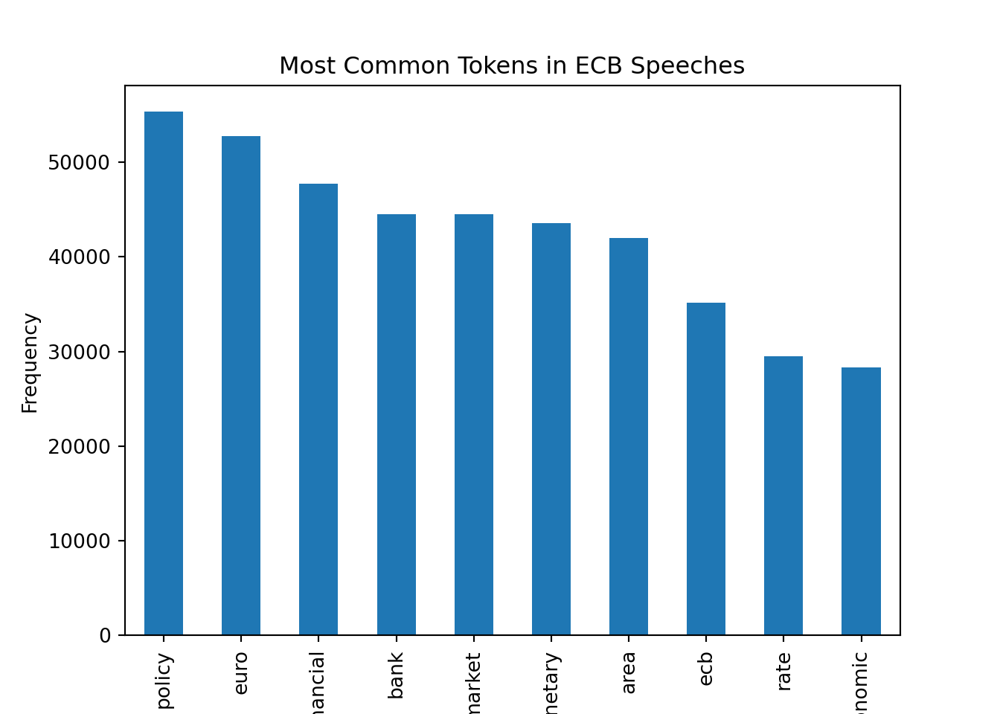
With the preprocessed tokens, we can now move on to the next steps of our NLP pipeline, such as creating text representations, performing text classification, or applying topic modeling techniques.
NoteN-Grams
We have not taken advantage of n-grams in our preprocessing function. N-grams are sequences of n tokens that can capture more context than individual tokens. For example, bigrams (n=2) can capture common phrases like “monetary policy” or “interest rates”. We could modify our preprocessing function to include n-grams if we wanted to capture more context in the speeches.
The downside of using n-grams is that it can lead to a much larger number of unique tokens, which can make the analysis more complex and computationally expensive. Therefore, it is often a trade-off between capturing more context and keeping the number of unique tokens manageable.
8.7.3 Topic Modeling
With the preprocessed tokens, we can now apply topic modeling techniques to uncover the underlying themes in the ECB speeches. One of the most popular topic modeling algorithms is Latent Dirichlet Allocation (LDA), which is a generative probabilistic model that assumes that each document is a mixture of topics and each topic is a mixture of words.
To apply LDA, we first need to create a dictionary of tokens and their corresponding ids, and then create a corpus of documents represented as bag-of-words vectors. We can use the gensim library to do this
dictionary = Dictionary(ecb_speeches["preprocessed_tokens"].to_list())for token, token_id in dictionary.token2id.items():
print(f"Token: {token}, Token ID: {token_id}")
if token_id == 10:
breakToken: able, Token ID: 0
Token: acceptance, Token ID: 1
Token: access, Token ID: 2
Token: accounted, Token ID: 3
Token: achieve, Token ID: 4
Token: achieved, Token ID: 5
Token: achievement, Token ID: 6
Token: achieving, Token ID: 7
Token: action, Token ID: 8
Token: active, Token ID: 9
Token: addition, Token ID: 10The dictionary maps each unique token to a unique id. We can check how many unique tokens we have in the dictionary
print(f"Number of unique tokens in the dictionary: {len(dictionary.token2id)}")Number of unique tokens in the dictionary: 57772To reduce the number of tokens, we can filter out tokens that appear in less than 5 speeches or more than 50% of the speeches, and keep only the top 1000 most frequent tokens
dictionary.filter_extremes(no_below=5, no_above=0.5, keep_n=1000)After filtering, we should have fewer unique tokens in the dictionary
print(f"Number of unique tokens after filtering: {len(dictionary.token2id)}")Number of unique tokens after filtering: 1000Next, we need to create a corpus of documents represented as bag-of-words vectors. Each document will be represented as a list of tuples, where each tuple contains the token id and the token count in the document
corpus = [dictionary.doc2bow(doc) for doc in ecb_speeches["preprocessed_tokens"].to_list()]We can access the bag-of-words representation of the first document in the corpus
corpus[0][0:10] # We only print the first 10 token ids and counts to avoid printing the entire list[(0, 1), (1, 2), (2, 1), (3, 2), (4, 1), (5, 1), (6, 1), (7, 1), (8, 1), (9, 1)]Let’s convert the bag-of-words representation back to the original tokens to see how it works
# Get the token ids and counts for the first document
token_ids_counts = corpus[0][0:10] # We only take the first 10 token ids and counts to avoid printing the entire list
# Convert the token ids back to tokens and print them with their counts
for token_id, count in token_ids_counts:
token = dictionary.get(token_id)
print(f"Token: {token}, Count: {count}")Token: access, Count: 1
Token: achieve, Count: 2
Token: achieved, Count: 1
Token: achievement, Count: 2
Token: achieving, Count: 1
Token: action, Count: 1
Token: active, Count: 1
Token: adequate, Count: 1
Token: adopted, Count: 1
Token: ahead, Count: 1Let’s count the word “achievement” to check whether the bag-of-words representation is correct
np.sum(np.array(ecb_speeches["preprocessed_tokens"].iloc[0]) == "achievement")2We can see that the word “achievement” appears 2 times in the first document, which matches the count in the bag-of-words representation.
Now that we have the corpus and the dictionary, we can train the LDA model. We will specify the number of topics to be 12, and we will run the model for 50 iterations with 10 passes over the corpus to ensure convergence. We also set a random state for reproducibility.
lda_model = LdaModel(corpus=corpus, id2word=dictionary, iterations=50, num_topics=12, passes=10, random_state=42)We can print the top words for each topic to get a sense of what the topics are about
lda_model.show_topics(-1, formatted=False)[0:2] # We only print the first 2 topics to avoid printing the entire list[(0, [('payments', 0.04790065), ('payment', 0.04614592), ('services', 0.019973036), ('cash', 0.019419985), ('retail', 0.013916831), ('systems', 0.012746514), ('eurosystem', 0.01080895), ('value', 0.00989731), ('settlement', 0.0086381715), ('transactions', 0.0075827874)]), (1, [('question', 0.01622666), ('communication', 0.015954657), ('mandate', 0.014578805), ('think', 0.0140253985), ('governing', 0.011451731), ('decision', 0.01072473), ('said', 0.010656158), ('ecbs', 0.00919335), ('independence', 0.008599674), ('trust', 0.007905229)])]It looks like the first topic is related to payment systems, and the second topic is related to central bank communication. We can also visualize the topics using the pyLDAvis library, which provides an interactive visualization of the topics and their relationships. The interpretation of topics is not always straightforward, unfortunately.
We can check the topic distribution for the first document in the corpus
lda_model[corpus][0][(2, 0.76008165), (7, 0.20240365), (11, 0.036066625)]Thus, each document is represented as a mixture of topics, and each topic is represented as a mixture of words. We can also assign the most likely topic to each document in the dataset
ecb_speeches["topic"] = [sorted(lda_model[corpus][text_id], key=lambda tup: tup[1], reverse=True)[0][0] for text_id in range(len(ecb_speeches["text"]))]We can see that topic 3 is the most common topic in the ECB speeches
ecb_speeches["topic"].value_counts()topic
3 392
8 353
11 300
4 284
7 269
5 201
2 186
0 184
10 168
6 127
1 115
9 86
Name: count, dtype: int64Let’s check what topic 3 is about by looking at the top words in that topic
topic_3_words = lda_model.show_topic(3, topn=10)
print(f"Top words in topic 3:") Top words in topic 3:for word, prob in topic_3_words:
print(f"Word: {word}, Probability: {prob}") Word: political, Probability: 0.01495784055441618
Word: rules, Probability: 0.012320776470005512
Word: integration, Probability: 0.010550971142947674
Word: governments, Probability: 0.009093624539673328
Word: governance, Probability: 0.008703907951712608
Word: reforms, Probability: 0.008555303327739239
Word: emu, Probability: 0.007822684943675995
Word: government, Probability: 0.0075700185261666775
Word: country, Probability: 0.007150417659431696
Word: state, Probability: 0.006892755161970854We can also visualize the topics over time to see how the focus of the ECB speeches has evolved. We will plot the share of each topic in the speeches for each year.
# Define the topic labels based on the top words in each topic
topics = sorted(lda_model.show_topics(num_topics=12, num_words=5, formatted=False), key=lambda tup: tup[0])
topic_words = [[word[0] for word in topic[1]] for topic in topics]
topic_labels = [", ".join(words) for words in topic_words]
# Compute the counts of each topic by year
topic_counts = ecb_speeches.groupby([ecb_speeches["Date"].dt.year, "topic"]).size().unstack(fill_value=0)
# Compute the shares of each topic by year
topic_shares = topic_counts.div(topic_counts.sum(axis=1), axis=0)
# Plot the shares of topics over time
topic_shares.plot(kind="bar", stacked=True, figsize=(10, 6), width=1, colormap="tab20")
plt.xlabel("Year")
plt.ylabel("Share of Topics")
plt.title("Shares of Topics in ECB Speeches Over Time")
plt.legend(title="Topic", bbox_to_anchor=(0.5, -0.8), loc="lower center", labels=topic_labels)
plt.show()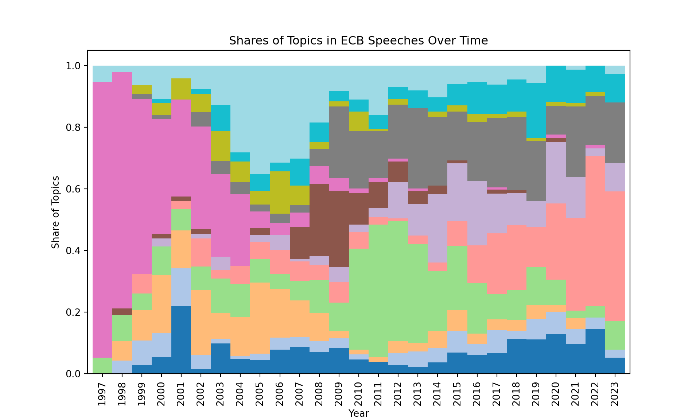
We can see that the focus of the ECB speeches has evolved over time, with some topics becoming more prominent in certain years. For example, we can see that at the beginning, the speeches were more focused on a topic related to governance of the eurosystem. After the financial crisis of 2008, bank regulation and supervision became a prominent topic. Around 2010, many speeches were focused on the sovereign debt crisis in the euro area, and more recently, supply side issues seem to have become a prominent topic in the ECB speeches.
It can also be convenient to visualize the topics using an interactive visualization. We can use the pyLDAvis library to create an interactive visualization of the topics and their relationships. This can help us to better understand the structure of the topics and how they relate to each other.
lda_display = pyLDAvis.gensim_models.prepare(lda_model, corpus, dictionary)
pyLDAvis.display(lda_display)To assess whether we have chosen a good number of topics, we can compute the coherence score for different numbers of topics and plot the results
topics = []
score = []
for ii in [2, 7, 12, 17]:
print(f"Training LDA model with {ii} topics...")
# Train the LDA model with ii topics
lda_model = LdaModel(corpus=corpus, id2word=dictionary, iterations=10, num_topics=ii, passes=10, random_state=42)
# Compute the coherence score for the model
# Note: Using workers=1 to avoid threading issues in Jupyter notebooks
# The "c_v" coherence metric can be memory-intensive; use "u_mass" if you encounter issues
cm = CoherenceModel(model=lda_model, texts=ecb_speeches["preprocessed_tokens"].to_list(), corpus=corpus, dictionary=dictionary, coherence="c_v", processes=1)
# Append the number of topics and the coherence score to the lists
topics.append(ii)
score.append(cm.get_coherence())Training LDA model with 2 topics...
Training LDA model with 7 topics...
Training LDA model with 12 topics...
Training LDA model with 17 topics...# Plot the coherence scores for different numbers of topics
plt.plot(topics, score)
plt.xlabel("Number of Topics")
plt.ylabel("Coherence Score")
plt.show()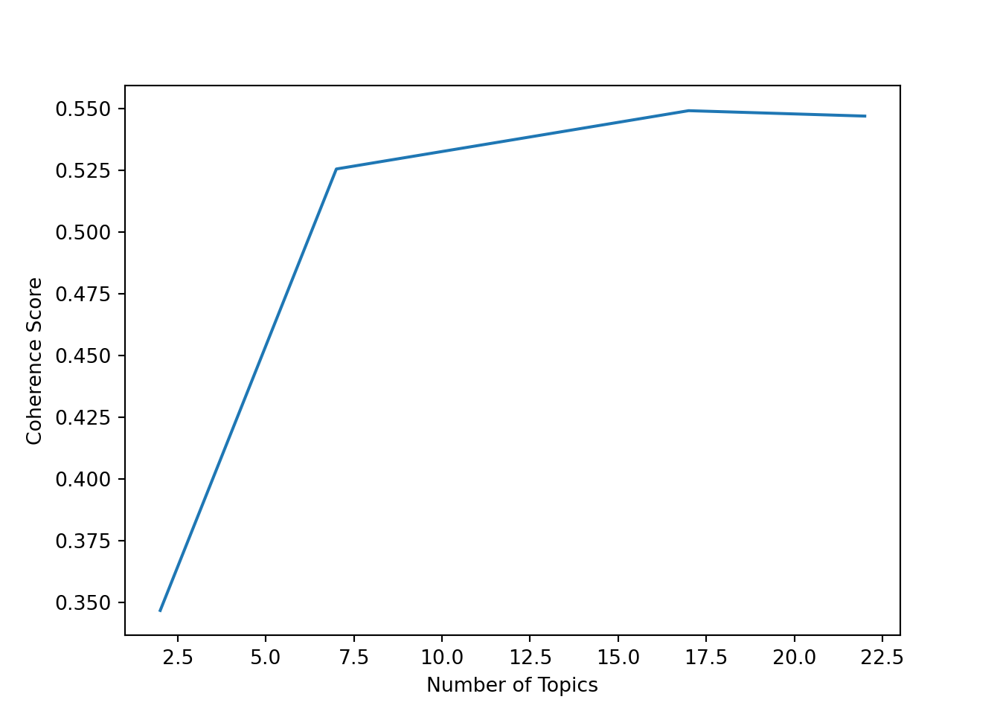
For this dataset, it looks like the coherence score is highest for around 12 topics, which is the number of topics we chose for our LDA model. However, the choice of the number of topics is not always clear-cut, and it can be helpful to also look at the interpretability of the topics when deciding on the number of topics to use.
8.8 Python Implementation: Sentiment Analysis
Let’s load the necessary libraries
import pandas as pd # Used for data manipulation
import numpy as np # Used for numerical operations
import matplotlib.pyplot as plt # Used for plotting
import seaborn as sns # Used for plotting
from huggingface_hub import login # Used to log in to Hugging Face and access datasets
import spacy # Used for text preprocessing and NLP tasks
from spacytextblob.spacytextblob import SpacyTextBlob # Used for dictionary-based sentiment analysis
from sklearn.feature_extraction.text import TfidfVectorizer # Used for creating TF-IDF representations of the text
from sklearn.model_selection import train_test_split # Used for splitting the dataset into training and testing sets
from sklearn.ensemble import RandomForestClassifier # Used for training a Random Forest classifier
from sklearn.metrics import confusion_matrix, accuracy_score, roc_auc_score, recall_score, precision_score # Used for evaluating the performance of the modelWe will use a pre-labeled dataset for sentence-level sentiment analysis of ECB speeches (Pfeifer and Marohl 2023), which is available on Hugging Face (Central Bank Communication Dataset). The dataset contains sentences from ECB speeches that have been labeled as positive or negative in terms of sentiment.
Let’s load the dataset into a pandas DataFrame
df = pd.read_csv("hf://datasets/Moritz-Pfeifer/CentralBankCommunication/Sentiment/ECB_prelabelled_sent.csv")8.8.1 Data Exploration
Let’s get some basic information about the dataset
df.info()<class 'pandas.core.frame.DataFrame'>
RangeIndex: 2563 entries, 0 to 2562
Data columns (total 2 columns):
# Column Non-Null Count Dtype
--- ------ -------------- -----
0 text 2563 non-null object
1 sentiment 2563 non-null int64
dtypes: int64(1), object(1)
memory usage: 40.2+ KBThe dataset contains two columns: “text”, which contains the text of the sentence, and “sentiment”, which contains the sentiment label (0 for negative, 1 for positive). Let’s take a look at the first few rows of the dataset
df.head() text sentiment
0 target2 is seen as a tool to promote the furth... 1
1 the slovak republic for example is now home to... 1
2 the earlier this happens the earlier economic ... 1
3 the bank has made essential contributions in k... 1
4 moreover the economic size and welldeveloped f... 1Let’s check the distribution of the sentiment labels in the dataset. This will give us an idea of whether the dataset is balanced or if there is a class imbalance that we need to be aware of when training our models.
df['sentiment'].value_counts().plot(kind='bar')
plt.title("Distribution of Sentiment Labels")
plt.xlabel("Sentiment")
plt.ylabel("Count")
plt.xticks(ticks=[0, 1], labels=["Negative", "Positive"], rotation=0)([<matplotlib.axis.XTick object at 0x1f3900f10>, <matplotlib.axis.XTick object at 0x1f389a7d0>], [Text(0, 0, 'Negative'), Text(1, 0, 'Positive')])plt.show()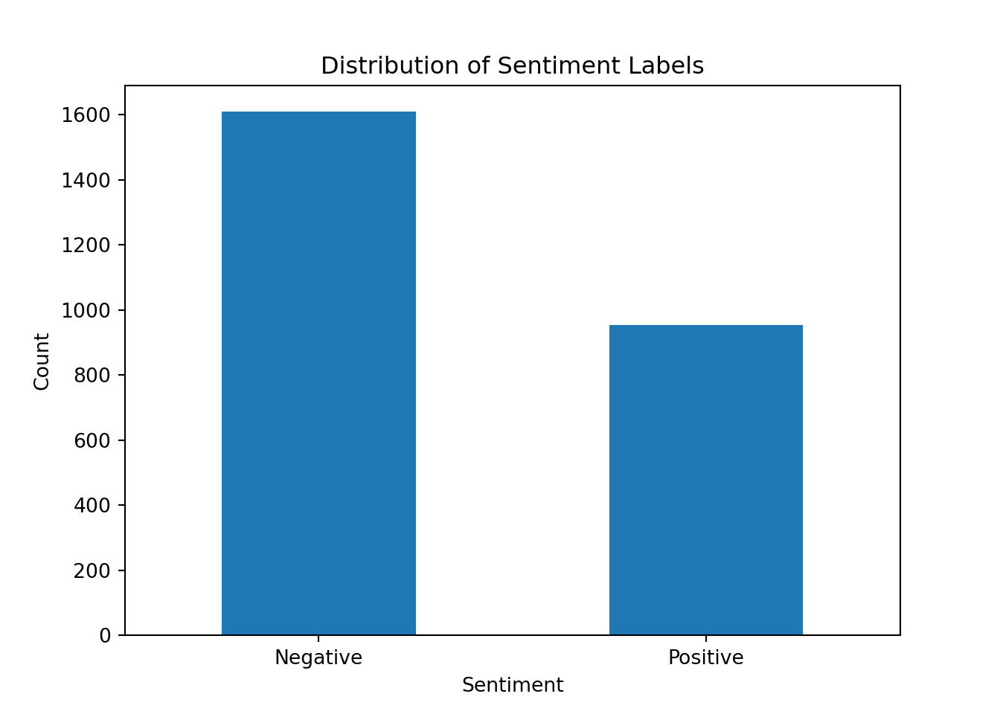
There is a slight imbalance but it is not as severe as in some other datasets that we have seen.
8.8.2 Dictionary-Based Approach to Sentiment Analysis
We can use the SpacyTextBlob component to perform dictionary-based sentiment analysis. This component uses the TextBlob library under the hood, which provides a simple API for performing sentiment analysis based on a predefined lexicon of words and their associated sentiment scores.
# Load the spaCy English model and add the SpacyTextBlob component to the pipeline
nlp = spacy.load('en_core_web_sm')
nlp.add_pipe('spacytextblob')<spacytextblob.spacytextblob.SpacyTextBlob object at 0x1f6357410># Example of how to use the SpacyTextBlob component for sentiment analysis
text = "The ECB's monetary policy is very effective in stabilizing the economy."
doc = nlp(text)
print(f"{text}: {doc._.blob.polarity}")The ECB's monetary policy is very effective in stabilizing the economy.: 0.78# Opposite example
text = "The ECB's monetary policy is not suitable for stabilizing the economy."
doc = nlp(text)
print(f"{text}: {doc._.blob.polarity}")The ECB's monetary policy is not suitable for stabilizing the economy.: -0.275Note that the polarity score ranges from -1 (very negative) to 1 (very positive), with 0 being neutral. This is different from the binary sentiment labels in our dataset, so we will need to convert the polarity scores to binary labels if we want to compare the results directly.
Also, note that the dictionary-based approach may not always capture the nuances of the language, especially in complex sentences or when there are negations.
text = "The ECB's monetary policy is not very effective for stabilizing the economy."
doc = nlp(text)
print(f"{text}: {doc._.blob.polarity}")The ECB's monetary policy is not very effective for stabilizing the economy.: -0.23076923076923073text = "The ECB's monetary policy is very ineffective for stabilizing the economy."
doc = nlp(text)
print(f"{text}: {doc._.blob.polarity}")The ECB's monetary policy is very ineffective for stabilizing the economy.: 0.2The second sentence is more negative than the first one, but the polarity score does not reflect that.
Let’s apply the SpacyTextBlob component to the entire dataset and see how well it performs in terms of classifying the sentiment of the sentences
df['textblob_sentiment'] = df['text'].apply(lambda x: nlp(x)._.blob.polarity)Now we can convert the polarity scores to binary labels using a simple threshold
df['textblob_label'] = df['textblob_sentiment'].apply(lambda x: 1 if x > 0 else 0)Now we can evaluate the performance of the dictionary-based approach by comparing the predicted labels with the true labels in the dataset. We can use metrics such as accuracy, precision, and recall to assess the performance of the model
accuracy = accuracy_score(df['sentiment'], df['textblob_label'])
recall = recall_score(df['sentiment'], df['textblob_label'])
precision = precision_score(df['sentiment'], df['textblob_label'])
print(f"Accuracy: {accuracy:.2f}")Accuracy: 0.59print(f"Recall: {recall:.2f}")Recall: 0.78print(f"Precision: {precision:.2f}")Precision: 0.47Note that we did not have to train any model for the dictionary-based approach, as it relies on a predefined lexicon of words and their associated sentiment scores. However, the performance of this approach may not be as good as more advanced machine learning methods, especially if the dataset contains a lot of domain-specific language or if the sentences are complex and contain multiple sentiments.
8.8.3 Machine Learning Approach to Sentiment Analysis
For the machine learning approach, we will need to preprocess the text data and convert it into a format that can be used as input for a machine learning model. This typically involves steps such as tokenization, stopword removal, and creating numerical representations of the text (e.g., using bag-of-words or TF-IDF).
Let’s start by defining a function to preprocess the text data
def preprocess_texts(texts):
# Use the spaCy pipeline to process the texts, which will handle tokenization, stopword removal, and lemmatization for us
docs = nlp.pipe(texts, disable=["tok2vec", "parser", "ner"])
processed_texts = []
for doc in docs:
# Lemmatize the tokens and convert them to lowercase, while also removing stopwords, punctuation, whitespace, and numbers
tokens = [token.lemma_.lower() for token in doc
if not token.is_stop and
not token.is_punct and
not token.is_space and
not token.like_num
]
# Join the tokens back into a single string and add it to the list of processed texts
processed_texts.append(" ".join(tokens))
return processed_textsdf['processed_text'] = preprocess_texts(df['text'])First, we need to split the dataset into a training set and a testing set. It’s important to do this before vectorization to avoid data leakage.
X = df['processed_text']
y = df['sentiment']
X_train, X_test, y_train, y_test = train_test_split(X, y, test_size=0.2, random_state=42, stratify=y) # We use 20% of the data for testing, set a random state for reproducibility, and stratify to maintain class balanceNow we can create a TF-IDF representation of the processed text data. Importantly, we fit the vectorizer only on the training data to avoid data leakage, then transform both the training and test sets.
vectorizer = TfidfVectorizer(max_features=1000) # We limit the number of features to 1000 to reduce the dimensionality of the data and speed up the training process
X_train = vectorizer.fit_transform(X_train) # Fit on training data only
X_test = vectorizer.transform(X_test) # Transform test data using the fitted vectorizerThen, we can train a Random Forest classifier on the training data
clf_rf = RandomForestClassifier(n_estimators=100, random_state = 42).fit(X_train, y_train)To evaluate the performance of the model, we can make predictions on the testing set and calculate metrics such as accuracy, precision, and recall
y_pred_rf = clf_rf.predict(X_test)
y_proba_rf = clf_rf.predict_proba(X_test)
print(f"Accuracy: {accuracy_score(y_test, y_pred_rf)}")Accuracy: 0.9103313840155945print(f"Precision: {precision_score(y_test, y_pred_rf)}")Precision: 0.9050279329608939print(f"Recall: {recall_score(y_test, y_pred_rf)}")Recall: 0.8481675392670157print(f"ROC AUC: {roc_auc_score(y_test, y_proba_rf[:, 1])}")ROC AUC: 0.9665132841208415Our machine learning model does perform quite well on the testing set. We can also visualize the confusion matrix to see how well the model is classifying the positive and negative sentences
conf_mat = confusion_matrix(y_test, y_pred_rf, labels=[1, 0]).transpose() # Transpose the sklearn confusion matrix to match the convention in the lecture
sns.heatmap(conf_mat, annot=True, cmap='Blues', fmt='g', xticklabels=['Positive', 'Negative'], yticklabels=['Positive', 'Negative'])
plt.xlabel("Actual")
plt.ylabel("Predicted")
plt.show()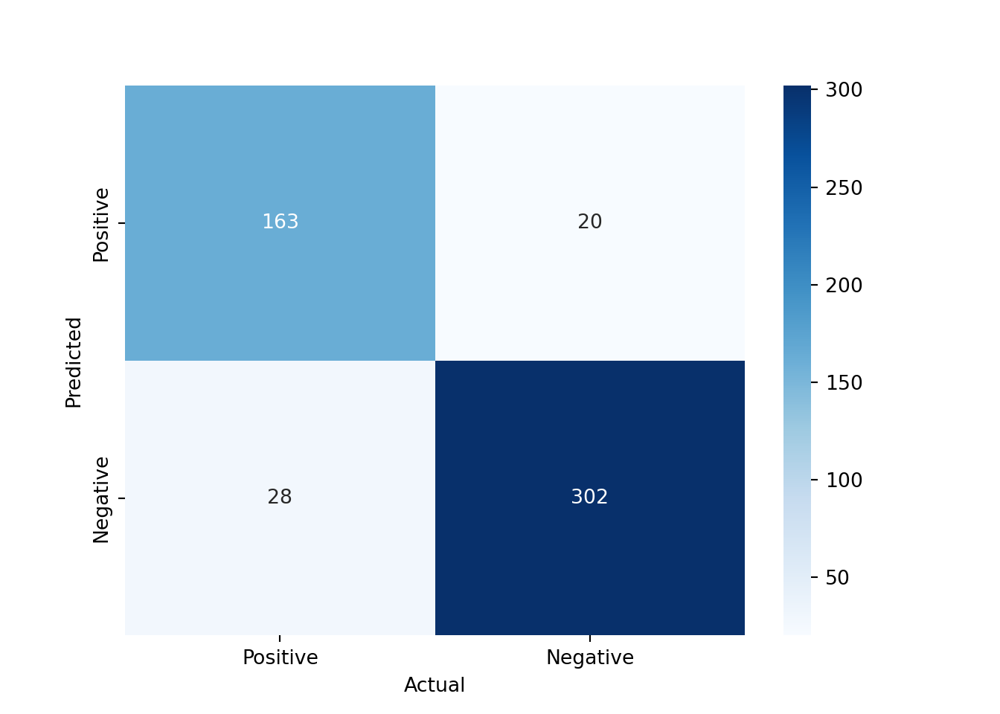
Let’s try the sentences that we used for the dictionary-based approach and see how the machine learning model classifies them
test_sentences = pd.Series([
"The ECB's monetary policy is not very effective for stabilizing the economy.",
"The ECB's monetary policy is very ineffective for stabilizing the economy."
])
test_processed = preprocess_texts(test_sentences)
test_vectorized = vectorizer.transform(test_processed)
test_pred_rf = clf_rf.predict(test_vectorized)
print(test_sentences[0], "->", "Positive" if test_pred_rf[0] == 1 else "Negative")The ECB's monetary policy is not very effective for stabilizing the economy. -> Negativeprint(test_sentences[1], "->", "Positive" if test_pred_rf[1] == 1 else "Negative")The ECB's monetary policy is very ineffective for stabilizing the economy. -> NegativeOur machine learning model is able to capture the difference in sentiment between the two sentences, while the dictionary-based approach was not. This is because the machine learning model can learn from the context and the combination of words in the sentences, while the dictionary-based approach relies on predefined sentiment scores for individual words, which may not always capture the nuances of the language.
We could do many more things to improve the performance of our machine learning model, such as hyperparameter tuning, using more advanced models (e.g., gradient boosting, or deep learning models), or using word embeddings instead of TF-IDF representations. However, this should give you a good starting point for performing sentiment analysis using both dictionary-based and machine learning approaches.
8.9 Python Implementation: Named Entity Recognition
First, we need to load the necessary libraries
import pandas as pd # Used for data manipulation
import numpy as np # Used for numerical operations
import matplotlib.pyplot as plt # Used for plotting
import spacy # Used for text preprocessing and NLP tasks
from spacy import displacy # Used for visualizing NER results
from wordcloud import WordCloud # Used for creating word cloudsWe also need to download the spaCy English model for NER. This only needs to be done once
#!python -m spacy download en_core_web_smThen, we download a dataset of central bank speeches. We are using the dataset from cbspeeches.com (Campiglio et al. 2025), which contains a collection of speeches by central bankers from around the world.
import urllib.request
import os.path
# Create the data folder if it doesn't exist
os.makedirs("data", exist_ok=True)
# Check if the file exists
if not os.path.isfile("data/CBS_dataset_v1.0.dta"):
print("Downloading dataset...")
# Define the dataset to be downloaded
fileurl = "https://www.dropbox.com/scl/fi/la5hpz39yht8mmoz0n98t/CBS_dataset_v1.0.dta?rlkey=jo0u8ktm1ixkwic4jw03re9c6&dl=1"
# Define the filename to save the dataset
filename = "data/CBS_dataset_v1.0.dta"
# Download the dataset in the data folder
urllib.request.urlretrieve(fileurl, filename)
print("DONE!")
else:
print("Dataset already downloaded!")Dataset already downloaded!Then, we load the dataset into a pandas DataFrame
speeches = pd.read_stata("data/CBS_dataset_v1.0.dta")
speeches = speeches.set_index("index")We first filter the dataset to only include ECB speeches
ecb_speeches = speeches.query("CentralBank == 'European Central Bank'").copy()
ecb_speeches.head() URL ... Source
index ...
2976 https://www.ecb.europa.eu/press/key/date/2000/... ... CB websites
2977 https://www.ecb.europa.eu/press/key/date/2000/... ... CB websites
2978 https://www.ecb.europa.eu/press/key/date/2000/... ... BIS
2979 https://www.ecb.europa.eu/press/key/date/2000/... ... BIS
2980 https://www.ecb.europa.eu/press/key/date/2000/... ... CB websites
[5 rows x 15 columns]We have explored the dataset in the previous section, so we will skip that part here and go directly to using the dataset for NER. We will use the en_core_web_sm model from spaCy, which is a small English model that is suitable for NER tasks.
8.9.1 Named Entity Recognition (NER) with spaCy
To perform NER, we first need to load the spaCy English model
# Load the spaCy English model
nlp = spacy.load("en_core_web_sm")Then, we can take the text of a speech and process it using spaCy
# Get the text of the first speech
text = ecb_speeches.iloc[0]["text"]
# Process the text using spaCy
doc = nlp(text)The named entities are stored in the ents attribute of the processed document. We can extract the text and the label of each entity and print them out
entities = [(ent.text, ent.label_) for ent in doc.ents]
for entity in entities[:10]:
print(entity)('One year', 'DATE')
('Speech', 'ORG')
('Sirkka Hamalainen', 'PERSON')
('the Executive Board', 'ORG')
('the European Central Bank', 'ORG')
('Europaisches Wochenende Berlin', 'PERSON')
('2000', 'DATE')
('Berlin', 'GPE')
('8 January 2000', 'DATE')
('First', 'ORDINAL')or we can visualize the named entities using displaCy
displacy.render(doc[:100], style="ent", jupyter=True) # We only visualize the first 100 tokens to avoid rendering the entire speech<IPython.core.display.HTML object>The named entities are not perfect. Sometimes, the model may miss some entities or misclassify them. However, it can still give us a good sense of the key players and topics that are mentioned in the speech. There are also more advanced models that can provide better results, such as the en_core_web_trf model, which is based on transformer architectures. However, it is also much slower to run, so we will stick with the smaller model for now.
Here is an overview of the different entity labels that spaCy can recognize:
print("Available entity types:", nlp.get_pipe("ner").labels)Available entity types: ('CARDINAL', 'DATE', 'EVENT', 'FAC', 'GPE', 'LANGUAGE', 'LAW', 'LOC', 'MONEY', 'NORP', 'ORDINAL', 'ORG', 'PERCENT', 'PERSON', 'PRODUCT', 'QUANTITY', 'TIME', 'WORK_OF_ART')Let’s extract the named entities for all the speeches in the dataset and store them in a new column in the DataFrame
def extract_entities(texts):
# Convert the numpy array of texts to a list of strings
text_list = texts.tolist()
# Process each text using spaCy
docs = nlp.pipe(text_list, disable=["tok2vec", "tagger", "parser", "attribute_ruler", "lemmatizer"]) # We disable the components that we don't need to speed up the processing
entities_list = []
for doc in docs:
entities_list.append([(ent.text, ent.label_) for ent in doc.ents])
return pd.Series(entities_list, index=texts.index)We will focus on the first 100 speeches to speed up the processing, as NER can be computationally intensive, especially for longer texts. We can always process more speeches later if needed.
entities_lists = extract_entities(ecb_speeches["text"].head(100)) # We only process the first 100 speeches to speed up the processingSuppose we want to analyze which organizations are most frequently mentioned in the ECB speeches. We can extract all the entities that are labeled as “ORG” and count their frequencies
all_orgs = []
for entities in entities_lists:
all_orgs.extend([ent[0] for ent in entities if ent[1] == "ORG"])
pd.Series(all_orgs).value_counts().head(10).plot(kind="bar")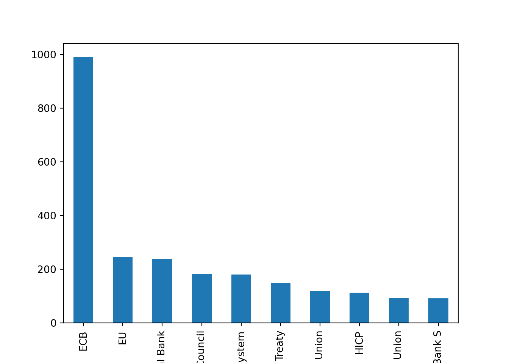
Unsurprisingly, the most frequently mentioned organization is the “European Central Bank” itself, followed by other institutions.
8.9.2 Combining NER with Dependency Parsing
A powerful feature of spaCy is that it allows us to combine NER with dependency parsing. This means that we can not only identify the named entities in a text, but also understand how they are related to each other.
Suppose we want to extract the affiliation of the speaker in the speech. We can do this by looking for the named entity that is labeled as “PERSON” and then checking its dependency relations to find the organization it is affiliated with.
person_entities = [ent for ent in doc.ents if ent.label_ == "PERSON"]The speaker is usually the first person entity mentioned in the speech, so we can take the first one from the list
speaker = person_entities[0]We can also get all the organization entities in the speech
organization_entities = [ent for ent in doc.ents if ent.label_ == "ORG"]Then, we can look at the dependency relations of the speaker entity to find the organization it is affiliated with.
Let’s first visualize the dependencies of the first 20 tokens in the speech to get a sense of how the entities are related to each other
displacy.render(doc[:23], style="dep", options={'compact': True}, jupyter=True)<IPython.core.display.HTML object>We can see that the speaker entity is related to an organization entity through the “appos” relation. We can extract this information programmatically as follows
for child in speaker.root.children:
if child.dep_ == "appos":
# Get the subtree of the appositive relation, which should contain the affiliation information
subtree_start = child.left_edge.i
subtree_end = child.right_edge.i + 1
# Print the text of the subtree, which should contain the affiliation information
print("Subtree: ", doc[subtree_start:subtree_end].text)
# Select the last organization entity that is mentioned in the subtree
for org in reversed(organization_entities):
if org.start >= subtree_start and org.end <= subtree_end:
print("Affiliation: ", org.text)
break
# We only consider the first appositive relation for simplicity, but there could be multiple ones in a speech
breakSubtree: Member of the Executive Board of the European Central Bank
Affiliation: the European Central BankTo make this operational and more robust can be a bit tricky, as the structure of the sentences can vary a lot across different speeches. However, dependency parsing can be a powerful tool to extract more complex relationships between entities in a text, and it can be combined with NER to get a richer understanding of the content of the speeches.